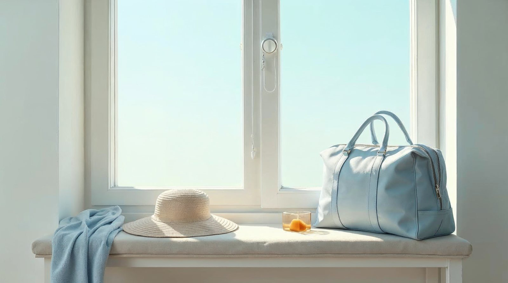

이종호 한의사 감수좋은꿈참사랑한의원 대표원장 (한의사 면허번호 19769)발행 2026-11-26 · 수정 2026-11-26
이 글의 차례
약 봉투를 정리하다 보면 어느새 몇 년째 같은 약을 챙겨 먹고 있다는 생각이 듭니다. 요즘은 화장실 횟수도 줄고 일상도 제법 안정되었는데, 몸이 쉽게 지치고 배가 가끔 묵직해 '이대로 괜찮은 걸까' 하는 마음이 듭니다.
궤양성 대장염이나 크론병으로 소화기내과 치료를 받고 계신 분들이 진료실에 오시면, 대개 병 자체보다 그 병과 함께 사는 일상의 무게를 이야기하십니다. 식사가 조심스럽고, 외출 전 화장실을 먼저 떠올리고, 피로가 쉽게 풀리지 않는다고 하십니다.
이 두 병은 장에 염증이 오래 이어지는 병이라 염증성 장 질환이라고 묶어 부릅니다. 치료의 중심은 소화기내과에서 처방하는 약과 정기 검사이고, 이 치료를 꾸준히 이어 가는 것이 무엇보다 중요합니다.
이 글은 그 치료를 대신하는 이야기가 아닙니다. 치료를 이어 가시는 동안 식사와 잠, 피로, 마음을 어떻게 돌보면 좋을지, 그리고 한의원에서는 어떤 부분을 나란히 살필 수 있는지를 정리한 글입니다.
궤양성 대장염과 크론병은 어떻게 다른가요
궤양성 대장염은 대장 안쪽 벽에 염증이 생기는 병입니다. 대개 항문 가까운 직장에서 시작해 위쪽으로 이어지며, 피와 점액이 섞인 설사, 급한 변의, 아랫배 통증이 흔한 증상입니다.
크론병은 입에서 항문까지 소화관 어디에나 염증이 생길 수 있는 병입니다. 소장 끝과 대장이 만나는 곳에 흔하고, 염증이 장벽 깊숙이 들어가기도 합니다. 복통과 설사, 체중 감소가 흔하고, 항문 주변에 고름이 고이거나 길이 생기는 문제가 함께 오기도 합니다.
두 병 모두 원인이 한 가지로 정리되지는 않았습니다. 타고난 체질, 장내 세균, 면역 반응, 환경이 함께 얽혀 생기는 것으로 봅니다. 그래서 누구의 잘못으로 생긴 병이 아니라는 점을 먼저 말씀드리고 싶습니다.
좋아진 시기와 나빠진 시기
염증성 장 질환은 염증이 잠잠해진 시기와 다시 활발해지는 시기가 번갈아 오는 경우가 많습니다. 증상이 거의 없이 지내는 시기를 관해기, 다시 심해지는 시기를 악화기라고 부릅니다.
좋아진 시기에도 약을 이어 가는 것이 중요합니다. 증상이 없다고 혼자 약을 줄이거나 끊으면 염증이 다시 활발해질 수 있습니다. 약을 조정하는 일은 담당 선생님과 상의해서 정하셔야 합니다.
나빠지는 신호를 일찍 알아차리는 것도 중요합니다. 대변 횟수가 늘거나, 변에 피와 점액이 다시 보이거나, 배가 자주 아프고 피로가 갑자기 심해진다면 다음 진료를 기다리지 말고 담당 병원에 먼저 연락해 보세요.
왜 치료 중에도 피로가 오래 남을까요
염증성 장 질환을 가진 분들이 가장 많이 말씀하시는 불편 가운데 하나가 피로입니다. 장의 염증이 잠잠해진 뒤에도 몸이 무겁고 쉽게 지친다는 이야기를 자주 듣습니다.
피로에는 여러 이유가 겹칩니다. 장에서 피가 조금씩 빠져나가거나 흡수가 줄어 생기는 빈혈, 비타민 D나 B12 같은 영양소 부족, 설사로 인한 수분 손실, 밤에 화장실 때문에 깨는 얕은 잠, 오래 이어진 걱정이 함께 몸을 누릅니다.
그래서 피로가 클 때는 먼저 혈액 검사로 빈혈과 영양 상태를 확인하는 것이 순서입니다. 담당 병원에서 받으신 혈액 검사 결과를 가져와 주시면, 생활에서 함께 살필 부분을 정리하는 데 도움이 됩니다.
식사는 어떻게 하면 좋을까요
염증성 장 질환에 '이것만 먹으면 된다'는 식단은 없습니다. 사람마다, 시기마다 편한 음식이 다르기 때문에 내 몸에 맞는 식사를 기록하며 찾아가는 것이 가장 현실적입니다.
- 나빠진 시기: 섬유질이 거친 채소, 껍질째 먹는 과일, 매운 음식, 기름진 음식, 술은 줄이고 죽, 흰살 생선, 두부, 달걀처럼 부드러운 음식 위주로
- 좋아진 시기: 지나친 제한보다 여러 음식을 골고루, 조금씩 범위를 넓혀 가기
- 장이 좁아진 부위가 있다고 들은 크론병: 질긴 채소나 씨, 견과류처럼 걸리기 쉬운 음식은 담당 선생님 안내에 따라 조심하기
- 설사가 잦은 날: 물과 함께 염분이 있는 맑은 국물로 수분 채우기
음식을 너무 많이 제한하면 체중과 근육이 줄고, 먹는 일이 두려워집니다. 영양이 걱정된다면 담당 병원의 영양 상담을 받아 보시길 권합니다. 체중이 계속 빠진다면 다음 진료 때 꼭 말씀하세요.
장 밖에서 나타나는 불편
염증성 장 질환은 장에만 머물지 않는 경우가 있습니다. 무릎이나 발목 같은 관절이 붓고 아프거나, 허리가 뻣뻣하거나, 눈이 충혈되고 아프거나, 정강이에 붉고 아픈 멍울이 생기거나, 입안이 자주 헐기도 합니다.
이런 불편이 생기면 장과 관련이 있을 수 있으니 담당 선생님께 알려 주세요. 눈이 아프고 충혈되는 증상은 안과 확인이 필요한 경우가 있어서, 따로 넘기지 마시고 함께 말씀하시는 것이 좋습니다.
한의원에서도 관절과 허리의 뻣뻣함, 몸의 피로처럼 함께 살필 수 있는 부분이 있습니다. 다만 그 불편이 장의 염증과 이어져 있는지는 담당 병원과 함께 확인하며 나란히 가는 것이 좋습니다.
마음도 함께 돌봐야 합니다
오래 가는 병은 몸만큼 마음을 지치게 합니다. 외출과 여행, 회식과 연애, 직장 생활까지 화장실과 장의 상태를 먼저 생각하게 되면 삶이 조금씩 좁아지는 느낌이 듭니다.
긴장과 걱정이 장의 염증을 직접 만든다고 단정하기는 어렵지만, 마음이 힘든 시기에 장의 불편이 더 크게 느껴지는 분이 많습니다. 반대로 장이 편해지면 마음도 함께 가벼워집니다.
같은 병을 가진 분들의 모임이나 병원의 상담 프로그램이 힘이 되었다는 분도 계십니다. 혼자 견디기 어려운 시기에는 정신건강의학과 상담을 받는 것도 좋은 선택입니다. 몸과 마음을 함께 돌보는 것은 약해서가 아니라 오래 가기 위해서입니다.
감기와 예방접종도 함께 챙깁니다
면역을 조절하는 약이나 주사를 쓰고 계신 분은 감기나 장염 같은 감염에 조금 더 신경을 써야 합니다. 손을 자주 씻고, 날것이나 덜 익힌 음식은 조심하며, 사람이 많은 곳에 오래 머문 날에는 충분히 쉬어 주세요.
예방접종도 담당 선생님과 상의해 챙기시는 것이 좋습니다. 쓰시는 약에 따라 맞을 수 있는 백신과 시기가 달라질 수 있어서, 접종 전에 담당 병원에 먼저 여쭤 보시길 권합니다.
감기약이나 진통제를 사서 드실 때도 약국에서 지금 드시는 약을 말씀해 주세요. 일부 진통소염제는 장을 자극할 수 있어서, 함께 드셔도 되는지 확인하고 드시는 것이 안전합니다.

일터와 여행, 일상을 넓혀 가기
좋아진 시기에는 할 수 있는 일을 조금씩 넓혀 가시길 권합니다. 병 때문에 미뤄 두었던 운동, 여행, 모임을 하나씩 다시 시작하면서 몸이 어디까지 편한지 확인해 보는 것입니다.
여행을 떠날 때는 드시는 약을 넉넉히 챙기고, 약 이름과 용량을 적은 메모나 처방전 사진을 휴대전화에 저장해 두세요. 장거리 이동 중에는 화장실 위치를 미리 확인해 두면 마음이 훨씬 편합니다.
직장에는 모든 것을 알릴 필요는 없지만, 믿을 만한 동료나 상사에게 화장실 사정과 정기 진료 일정 정도를 나눠 두면 부담이 줄어든다는 분이 많습니다. 내가 편하게 지낼 수 있는 환경을 만드는 것도 치료의 한 부분입니다.
먼저 이렇게 여쭙니다
치료 이야기를 들으며, 저는 대략 이런 순서로 여쭙니다.
- 언제 어떤 병으로 진단받으셨고, 어느 병원에 다니시나요?
- 지금 드시는 약과 주사 치료는 무엇인가요?
- 요즘 대변은 하루 몇 번, 어떤 모양인가요? 피나 점액이 보이나요?
- 최근 혈액 검사에서 빈혈이나 다른 이야기를 들으셨나요?
- 피로, 관절, 피부, 입안 헐음처럼 함께 불편한 곳이 있나요?
- 잠과 식사, 마음은 요즘 어떠신가요?
모두 정확히 기억하지 못하셔도 괜찮습니다. 약 봉투와 최근 검사 결과만 챙겨 오셔도 충분히 이야기를 시작할 수 있습니다.
일상에서 먼저 해 볼 수 있는 것
- 약은 담당 선생님 안내대로 꾸준히, 빠뜨리지 않도록 알람 맞춰 두기
- 담배를 피우신다면 끊는 것을 담당 선생님과 상의하기(특히 크론병)
- 진통소염제는 처방 없이 드시지 않고, 필요하면 담당 선생님께 먼저 여쭙기
- 잠자리에 드는 시각을 일정하게 맞추고 7시간 안팎 자기
- 좋아진 시기에는 하루 20~30분 걷기와 가벼운 근력 운동으로 근육 지키기
- 외출 전 화장실 위치를 미리 알아 두어 마음의 부담 덜기
새로운 영양제나 건강식품을 시작하고 싶다면 먼저 담당 선생님께 여쭤 보세요. 면역을 조절하는 약을 드시는 분도 많아서, 무엇을 더하든 함께 확인하고 가는 것이 안전합니다.
좋아진 시기에 몸을 움직이는 습관을 만들어 두면 근육과 뼈를 지키는 데 도움이 됩니다. 스테로이드를 오래 쓰셨던 분은 뼈가 약해지기 쉬워서, 걷기와 가벼운 근력 운동, 햇볕 쬐기를 함께 챙기시길 권합니다. 운동의 강도는 그날 몸 상태에 맞춰 조절하시면 됩니다.
한의원에서 함께 살필 수 있는 경우
- 담당 병원에서 좋아진 시기라고 들었는데 피로와 더부룩함이 오래 남는 경우
- 대변 횟수는 안정되었지만 배가 차고 묵직한 느낌이 이어지는 경우
- 오래 이어진 걱정과 얕은 잠으로 몸과 마음이 함께 지친 경우
- 허리와 관절의 뻣뻣함, 몸살 같은 피로가 함께 있는 경우
좋은꿈참사랑한의원에 오시면 먼저 아래 '먼저 확인이 필요한' 신호가 없는지부터 봅니다. 그다음 맥을 짚고 식사와 대변, 잠, 피로, 마음을 여쭈며, 배와 관절을 살펴봅니다.
진찰한 내용을 바탕으로 생활에서 바꿔 볼 것 하나와 함께 침, 온열 관리, 한약 상담 가운데 지금 상태에 맞는 것을 정합니다. 염증성 장 질환은 면역을 조절하는 약을 드시는 경우가 많아서, 한약은 드시는 약을 모두 확인하고 필요하면 담당 선생님과 상의를 거쳐 아주 신중하게 정합니다. 처방받은 약은 상의 없이 멈추지 않습니다.
임신 중이시거나 임신을 준비하고 계시다면 처음에 먼저 알려 주세요. 담당 소화기내과와 산부인과 선생님의 안내를 먼저 따르시도록 하고, 한의원 진료도 그에 맞춰 조심스럽게 정합니다.
이렇게 기록해 오시면 상담이 쉬워집니다
오래 가는 병일수록 기록이 큰 힘이 됩니다. 2주 정도 적어 보세요.
- 하루 대변 횟수와 모양, 피나 점액이 보인 날
- 배가 불편했던 시각과 자리
- 끼니 메뉴와 불편이 따라온 음식
- 아침의 피로감(10점 만점), 잠든 시각과 밤에 깬 횟수
- 관절, 피부, 입안처럼 장 밖에서 불편했던 곳
이 기록은 담당 병원 진료 때도 그대로 보여 드리시면 좋습니다. 빠진 날이 있어도 괜찮습니다. 휴대전화 메모나 달력 앱에 짧게 남기는 것만으로도 충분하고, 몇 달이 쌓이면 나빠지기 전에 어떤 날이 겹쳤는지가 보이기 시작합니다.
오래 함께 가는 장을 위해
염증성 장 질환은 오래 함께 가는 병인 만큼, 치료와 생활이 함께 걸어가야 합니다. 약은 담당 병원과 함께, 생활은 매일의 작은 습관으로 채워 가시면 됩니다.
좋아진 시기가 길어지면 병을 잊고 지내는 날도 생깁니다. 그런 날이 많아지는 것 자체가 치료와 생활이 함께 잘 가고 있다는 뜻입니다. 다시 흔들리는 시기가 와도 자책하지 마시고, 담당 병원과 함께 차분히 다음 걸음을 정하시면 됩니다.
가족도 이 병과 함께 사는 사람입니다. 식사와 화장실, 피로에 대한 사정을 가족과 나눠 두시면 서로 눈치 보지 않고 도울 수 있습니다. 진료 때 가족이 함께 오셔서 궁금한 점을 물어보셔도 좋습니다.
이번 주에는 약 알람 맞추기, 잠드는 시각 정하기, 식사 기록 시작하기 가운데 하나만 골라 보세요. 다음에 오시면 그 일주일 동안 몸이 어땠는지부터 여쭙겠습니다.
이런 증상은 먼저 확인이 필요합니다
- 피가 섞인 설사가 하루에도 여러 번 이어지면서 열이 나고 배가 심하게 아픈 경우
- 배가 심하게 부풀어 오르고 방귀와 변이 나오지 않으면서 토하는 경우
이런 신호가 있으면 한의원보다 가까운 병원이나 응급실을 먼저 찾으세요.
함께 읽으면 좋은 글
- 배가 자주 아프고 설사·변비가 반복되는 과민성 장 증후군은 어떻게 살피나요?
- 장염을 앓고 난 뒤 장이 예전 같지 않을 때, 회복기에는 무엇을 살피나요?
- 변을 보고 나도 개운하지 않은 잔변감, 하루에 여러 번 화장실에 갈 때는 어떻게 살피나요?
- 체중은 정상인데 인바디에서 근육량이 적게 나왔다면 무엇부터 살피나요?
- 한의원 문진에서 몸의 따뜻함, 소화, 잠, 대소변, 통증은 왜 함께 묻나요?
여쭙는 것
- 언제 어떤 병으로 진단받으셨고, 어느 병원에 다니시나요?
- 지금 드시는 약과 주사 치료는 무엇인가요?
- 요즘 대변은 하루 몇 번, 어떤 모양인가요? 피나 점액이 보이나요?
생활에서 해 볼 것
- 약은 담당 선생님 안내대로 꾸준히, 빠뜨리지 않도록 알람 맞춰 두기
- 담배를 피우신다면 끊는 것을 담당 선생님과 상의하기(특히 크론병)
- 진통소염제는 처방 없이 드시지 않고, 필요하면 담당 선생님께 먼저 여쭙기
한의원에서 함께 살필 것
- 담당 병원에서 좋아진 시기라고 들었는데 피로와 더부룩함이 오래 남는 경우
- 대변 횟수는 안정되었지만 배가 차고 묵직한 느낌이 이어지는 경우
- 오래 이어진 걱정과 얕은 잠으로 몸과 마음이 함께 지친 경우
먼저 확인이 필요한 신호
- 피가 섞인 설사가 하루에도 여러 번 이어지면서 열이 나고 배가 심하게 아픈 경우
- 배가 심하게 부풀어 오르고 방귀와 변이 나오지 않으면서 토하는 경우
한눈에 보는 표
| 구분 | 핵심 |
|---|---|
| 여쭙는 것 | 언제 어떤 병으로 진단받으셨고, 어느 병원에 다니시나요? 지금 드시는 약과 주사 치료는 무엇인가요? |
| 생활에서 해 볼 것 | 약은 담당 선생님 안내대로 꾸준히, 빠뜨리지 않도록 알람 맞춰 두기 담배를 피우신다면 끊는 것을 담당 선생님과 상의하기(특히 크론병) |
| 한의원에서 함께 살필 것 | 담당 병원에서 좋아진 시기라고 들었는데 피로와 더부룩함이 오래 남는 경우 대변 횟수는 안정되었지만 배가 차고 묵직한 느낌이 이어지는 경우 |
| 먼저 확인이 필요한 신호 | 피가 섞인 설사가 하루에도 여러 번 이어지면서 열이 나고 배가 심하게 아픈 경우 배가 심하게 부풀어 오르고 방귀와 변이 나오지 않으면서 토하는 경우 |
자주 묻는 질문
염증성 장 질환이 있는데 한의원 진료를 받아도 되나요?
소화기내과 치료를 이어 가시면서 생활과 피로, 소화의 불편을 함께 살피는 방식으로 진료합니다. 드시는 약과 최근 검사 결과를 알려 주시면 그에 맞춰 진료 방향을 정합니다.
한약을 먹으면 지금 먹는 약을 줄일 수 있나요?
한약으로 약을 대신하거나 줄이는 일은 권하지 않습니다. 약을 조정하는 일은 담당 선생님과 상의해서 정하시고, 한약은 드시는 약을 모두 확인한 뒤 신중하게 정합니다.
좋아진 시기에는 무엇이든 먹어도 되나요?
지나치게 제한하기보다 여러 음식을 골고루, 조금씩 범위를 넓혀 가시는 쪽을 권합니다. 크론병으로 장이 좁아진 부위가 있다면 담당 선생님 안내를 먼저 따라 주세요.
침 치료를 받아도 괜찮을까요?
드시는 약과 피 검사 결과, 지금의 상태를 확인한 뒤 자리와 횟수를 정합니다. 면역을 조절하는 약을 드신다면 처음에 꼭 말씀해 주세요.
좋은꿈참사랑한의원은 재진 때 지난번 이야기부터 이어서 여쭙니다. 진료시간과 예약은 오시는 길에서 확인하세요.
어디서 상담받을 수 있나요?
좋은꿈참사랑한의원은 서울 동작구 만양로2길 2 신성빌딩 3층·5층(서울 동작구 상도동, 7호선 상도역 3번 출구 근처)에 있습니다. 한의사 3명(이종호 대표원장, 조영기 수석진료원장, 정원영 진료원장)이 진료합니다. 진료시간은 평일 09:30~20:00(점심 13:00~14:00), 토·일·공휴일 09:30~15:00이며, 방문 전 전화로 확인을 권합니다. 예약은 네이버 예약, 카카오톡 상담, 전화 02-815-7510로 받습니다.
이 글은 일반적인 건강 정보이며 개인의 진단이나 치료를 대신하지 않습니다. 증상이 있거나 복용 중인 약이 있다면 진료를 통해 확인하세요. 치료 효과는 개인마다 다를 수 있습니다.
작성 기준: 일반적으로 알려져 있는 건강 정보를 참고해 정리했습니다(대표원장 감수). 증상 기록은 1~2주 동안 하루 1회, 비슷한 시간에 적어 오시면 지난 상태와 비교하기 쉽습니다.